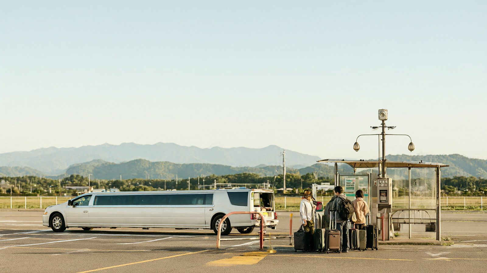

공항버스 1,400엔, 택시 5,600~6,100엔, 렌터카를 가족 3명 기준으로 비교. 11월 1일 시간표 개정 안내 포함
구마모토공항에서 시내까지: 공항버스·택시·렌터카 비교
기준일 2026년 10월 22일. 성인 2명과 초등학생 1명이 인천에서 직항으로 도착하는 상황을 기준으로 썼습니다. 환율은 100엔=853.02원(한국수출입은행 매매기준율, 2026-10-16 고시)이며 원화는 모두 약입니다.
한눈에 보기
- 구마모토역이나 시내 중심가로 가는 가장 무난한 방법은 공항버스입니다. 예약이 필요 없고 어른 1,400엔입니다 (산코버스).
- 초등학생은 어른 요금의 반액인 700엔입니다. 가족 3명 편도는 3,500엔(약 29,900원)입니다 (산코버스 운임 구분 안내).
- 택시는 구마모토역까지 예상 6,100엔(약 52,000원)이고 통행료는 따로입니다 (구마모토공항 공식 사이트, 2026년 6월 기준).
- 공항버스 시간표가 2026년 11월 1일에 개정됩니다. 11월 이후 여행이라면 막차 시각을 출발 전에 다시 확인해야 합니다 (산코버스, 구마모토공항 공지 10월 21일).
선택지 비교
| 수단 | 소요시간 | 요금 (가족 3명 편도) | 막차·첫차 | 가족 추천 |
|---|---|---|---|---|
| 공항버스 → 구마모토역 앞 | 약 60~65분 (산코버스 노선 안내 약 60분, 공항 사이트 약 65분) | 어른 1,400엔 x 2 + 초등 700엔 = 3,500엔 (약 29,900원) | 공항 출발 평일 첫차 8:20, 막차 21:30은 2026년 4월 개정판 값. 11월 1일 개정판은 평일·토·일 모두 첫차 8:40, 막차 21:35 (구마모토역 앞 도착 22:26, 산코버스 공식 시간표 PDF) | 가장 추천. 비용이 낮고 짐을 실을 수 있음 |
| 공항버스 → 사쿠라마치 버스터미널 | 약 50분 (특별쾌속 약 45분) | 같은 요금 3,500엔 | 위와 같음 | 시내 중심 숙소 |
| 특급 → 도리초스지 | 약 40분 (3번 승강장) | 같은 요금 3,500엔 (공항 사이트 요금표 1,400엔 기준) | 위와 같음 | 구마모토성 주변 숙소 |
| 택시 → 구마모토역 | 약 45분, 20.0㎞ | 예상 6,100엔 (약 52,000원), 통행료 별도 | 확인 필요 (공식 안내에 운행 시간 없음) | 늦게 도착했거나 짐이 많을 때 |
| 택시 → 도리초스지 | 약 40분, 18.3㎞ | 예상 5,600엔 (약 47,800원) | 확인 필요 | 성 주변 숙소, 버스 막차를 놓쳤을 때 |
| 택시 → 사쿠라마치 | 약 40분, 18.6㎞ | 예상 5,700엔 (약 48,600원) | 확인 필요 | 시내 중심 숙소 |
| 렌터카 | 영업소에서 수령 후 운전 약 40분 | 확인 필요 (업체와 날짜별로 다름) | 공항 주유소 영업 8:00~19:30 (반납 때 참고) | 아소·구로카와를 갈 때 (다음 글 참고) |
(출처: 산코버스 시간표·운임 안내, 구마모토공항 공식 사이트 교통 안내. 택시 요금은 도로 상황에 따라 달라질 수 있습니다.)
버스와 택시, 얼마나 차이 날까
| 구간 | 버스 3명 | 택시 | 차이 |
|---|---|---|---|
| 구마모토역 | 3,500엔 (약 29,900원) | 6,100엔 (약 52,000원) | 약 2,600엔 (약 22,200원), 택시 쪽 통행료 별도 |
| 도리초스지 | 3,500엔 (약 29,900원) | 5,600엔 (약 47,800원) | 약 2,100엔 (약 17,900원), 택시 쪽 통행료 별도 |
가족 3명이면 택시가 버스의 1.6~1.8배 수준입니다. 대한항공 도착 시각(18:35)에 입국 수속과 짐 수령을 마치면 저녁 7시를 넘기므로, 피곤한 아이가 있으면 택시도 충분히 고려할 만합니다.
공항버스 자세히 보기
- 예약은 필요 없습니다. 좌석 정원제로 먼저 오는 순서대로 탑니다. 버스 안에 화장실은 없습니다 (산코버스).
- 신용카드 터치 결제를 쓸 수 있다고 표시되어 있습니다 (산코버스). 공항 버스표 자동판매기에서는 시내행 할인표를 판다고 안내되어 있으나 할인 금액은 확인 필요입니다 (구마모토공항).
- 승강장은 시내행 일반 버스가 4번, 도리초스지행 특급이 3번입니다 (구마모토공항).
- 버스는 항공편과 연계해 운행하지 않습니다. 공항 출발 막차만 항공기와 연계됩니다. 교통 상황으로 크게 늦어질 수 있으니 국제선은 출발 2시간 전 도착을 목표로 한 버스를 타세요 (산코버스).
- 큰 행사가 있는 날에는 혼잡합니다. 산코버스가 10월 1일에 혼잡 공지를 올렸습니다. 행사 일정은 출발 전에 확인하세요.
- 콘서트가 열리면 그랑메세 구마모토 앞 정류장에서 승하차 제한이 있을 수 있습니다 (산코버스).
어린이 요금 확인 결과
허브 글에서 확인 필요로 남겨 둔 항목입니다. 산코버스 운임 구분 안내로 확인했습니다.
| 구분 | 적용 | 요금 |
|---|---|---|
| 영아 (1세 미만) | 무료 | 0엔 |
| 유아 (1세~취학 전) | 소아 이상 동반자 1명당 유아 1명 무료. 2번째 유아부터 소아 요금. 좌석을 따로 확보하면 소아 요금 | 해당 시 소아 요금 |
| 소아 (초등학생) | 어른 요금의 반액, 5엔 단위 끝수는 10엔 단위로 올림 | 1,400엔 기준 700엔 (약 6,000원) |
| 어른 (중학생 이상) | 어른 요금 | 1,400엔 (약 11,900원) |
- 공항리무진도 이 구분을 따른다고 명시되어 있습니다. 아이의 학년이 경계선(초등학교 졸업 전후)이면 승차 전에 나이 기준을 다시 확인하세요.
11월 시간표 개정 확인법
- 산코버스 공항리무진 시간표 페이지를 엽니다. 같은 페이지에 2026년 4월 1일 개정판과 2026년 11월 1일 개정판이 나란히 올라 있습니다 (산코버스).
- 여행일이 10월 31일 이전이면 4월 1일 개정판, 11월 1일 이후이면 11월 1일 개정판을 봅니다.
- 11월 1일 개정에서 편수와 출발 시각이 바뀝니다 (산코버스 공지). 공식 시간표 PDF에서 확인한 값입니다. 공항 출발 첫차 8:40, 막차 21:35(구마모토역 앞 도착 22:26). 시내 출발은 구마모토역 앞 첫차 5:30(공항 도착 6:28), 사쿠라마치 버스터미널 마지막 19:05(공항 도착 19:49~19:52)입니다. 평일·토·일 모두 같고 도착 시각만 요일별로 몇 분 다릅니다.
- 시간표와 운임 검색은 산코버스가 안내하는 검색 서비스로도 할 수 있습니다.
- 하루 전에 한 번 더 산코버스 운행 상황 페이지에서 정상 운행인지 확인합니다.
추천
| 상황 | 추천 |
|---|---|
| 낮 시간 도착 (트리니티항공 09:25 도착) | 공항버스. 첫날 구마모토성이나 시내 관광을 바로 시작할 수 있음 |
| 저녁 도착 (대한항공 18:35 도착) | 입국 후 버스가 가능하면 버스. 20시를 넘기면 택시 또는 숙소 근처까지 가는 버스 확인 |
| 아소·구로카와를 바로 갈 때 | 공항에서 렌터카를 받음 (다음 글 참고) |
| 짐이 많고 아이가 피곤할 때 | 도리초스지 또는 사쿠라마치 기준 택시 |
주의
- 11월 1일 이후 막차를 확인하지 않고 일정을 짜지 마세요. 개정으로 막차와 첫차가 바뀔 수 있습니다.
- 비행기가 늦게 도착하면 버스 막차를 놓칠 수 있습니다. 공항 출발 막차만 항공기와 연계되지만 큰 지연에는 대응이 제한됩니다 (산코버스).
- 지진 후라 도로 사정이 바뀔 수 있습니다. 구마모토공항 공식 사이트에 교통 사업자별 운행 상황 링크가 있습니다.
- 택시 예상 요금에는 통행료가 들어 있지 않습니다. 구마모토시 택시협회 전화는 096-365-6633입니다 (구마모토공항 공식 사이트).
- 공항 셔틀택시 사전 예약 서비스(니어미)가 안내되어 있으나 요금은 확인하지 못했습니다. 확인 필요입니다.
귀국 때 공항 가는 법
- 국제선은 출발 2시간 전 도착을 권장합니다 (산코버스).
- 트리니티항공 10:25 출발편이면 공항 도착 목표는 08:25입니다. 시내에서 이른 아침 버스를 타야 합니다. 11월 1일 개정판은 구마모토역 앞 5:30이 첫차이고, 7:00 출발이면 평일 8:11, 토요일 8:02, 일·공휴일 7:59에 공항에 도착합니다 (산코버스 공식 시간표 PDF).
- 대한항공 19:35 출발편이면 공항 도착 목표는 17:35입니다. 10월 25~31일은 19:30 출발로 안내됩니다 (구마모토공항 공식 운항표).
- 렌터카를 반납한다면 반납 영업소와 주유소 위치를 확인하세요. 공항 주유소는 8:00~19:30 연중무휴입니다 (구마모토공항 공식 사이트).
확인 필요 항목
- 공항 버스표 자동판매기 할인표의 할인 금액 (구마모토공항 공식 접근 페이지에 금액 표기 없음, 2026-10-22 확인)
- 택시의 심야 할증, 운행 시간, 공항 셔틀택시(니어미) 요금 (공항 공식 안내에 없음)
- 렌터카 요금과 공항 영업소별 영업시간 (공항 공식 사이트에는 업체 목록만 있음)
- 11월 이후 겨울 편성 직항 시각 (공항 공식 운항표에 10월 31일까지만 게시. 10월 25~31일은 트리니티항공 TW287 출발 07:50, TW288 도착 12:05, 대한항공 KE2155 16:45 출발, KE2156 19:30 출발로 확인)
공식 출처
- 구마모토공항 공식 사이트 교통 안내 (택시 예상 요금 2026년 6월 기준, 승강장, 렌터카 업체 목록): https://www.kumamoto-airport.co.jp/en/access/
- 구마모토공항 공지, 2026년 11월 1일 공항리무진 시간표 개정 (2026-10-21): 위 sources 목록의 공지 주소
- 산코버스 공항리무진 안내: https://www.sankobus.jp/bus/ap-limousine/
- 산코버스 시간표와 운임(2026-08-01 개정 운임 1,400엔): https://www.sankobus.jp/bus/ap-limousine/jikoku/
- 산코버스 운임 구분(영유아·소아): https://www.kyusanko.co.jp/sankobus/ticket/tariffsort/
- 환율: 한국수출입은행 매매기준율 2026-10-16 고시, 100엔=853.02원 (허브 글과 동일, 환율 조회 주소는 sources 목록 참고)